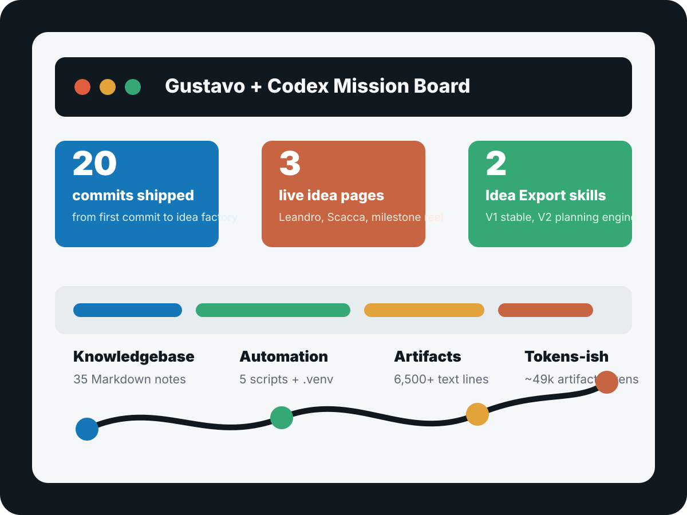

commits
From initial repo to Idea Export V2 planning.
From workspace check to idea factory
What started as a simple workspace status check turned into a GitHub-first knowledgebase, live persuasion pages, reusable skills, Python tooling, and the blueprint for an Oracle-ready idea-to-approval engine.

Hard numbers, soft victory lap
From initial repo to Idea Export V2 planning.
Excluding `.git`, `.venv`, and local macOS metadata.
Projects, system memory, templates, milestones, and plans.
Leandro onboarding and Scacca LATAM Codex acceleration.
Mail/calendar tools, daily sync, validators, and publishing helpers.
V1 is stable. V2 is the approval engine blueprint.
Token-ish telemetry
The repo does not contain Codex billing telemetry or exact model-token logs. The best honest proxy is tracked text volume: around 167,727 characters across Markdown, HTML, CSS, JavaScript, shell scripts, YAML, and requirements files. Using a rough four-characters-per-token rule, that is about 42k artifact tokens.
text lines across docs, pages, skills, and scripts
knowledgebase characters, about 21k estimated artifact tokens
idea-page source characters, about 11k estimated artifact tokens
Roll the tape
Knowledge, scripts, projects, templates, and Codex memory moved into one tracked workspace.
OCI, Tailscale, Paperclip, Node tooling, and private service posture all came together.
Leandro and Scacca each got polished, public, personalized Codex landing pages.
V1 turned the page workflow into a reusable skill. V2 added Strategy Brief, Page Draft, and Publish Pack.
A dashboard backlog item now tracks campaigns, touchpoints, CTAs, and conversion momentum.
What changed
Codex knows where durable context lives and how to use it.
Ideas can become live URLs instead of dying politely in slide decks.
Idea Export turns audience, context, CTA, and follow-up into a repeatable system.
The repo now has the tools, backlog, and milestones to keep compounding.
Next executable move
The next upgrade is a campaign dashboard that shows every exported idea, every touchpoint, every CTA, and the next action needed to convert.
See the latest live idea page